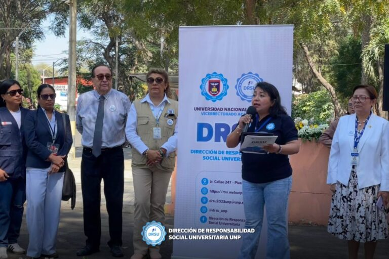

04
OCT
¿Qué es RSU?
"La Responsabilidad Social Universitaria busca reunir a la Universidad en la sociedad atendiendo sus cuatro
procesos: Gestión, Docencia, Investigación y Extensión, con la misión universitaria, sus valores y
compromiso social. Esta Responsabilidad se realiza mediante una autoreflexión institucional transparente con
participación dialógica de toda la comunidad universitaria y los múltiples sectores sociales, interesados en
el buen desempeño universitario o afectados por él, y persigue la transformación efectiva del ejercicio del
saber en la sociedad, hacia la solución de los problemas de Exclusión, inequidad e insostenibilidad."
Responsabilidad Social Universitaria
4 Impactos que las universidades generan en el entorno
Impactos organizacionales
• Económicos
• Laborales
• Ambientales
• Laborales
• Ambientales
Impactos educativos
• Formación académica
Responsabilidad Social Universitaria
RSU
4 Impactos que las universidades generan en el entorno
Impactos cognitivos
• Investigación
• Epistemología
• Epistemología
Impactos sociales
• Extensión
• Transferencia
• Participación social
• Transferencia
• Participación social
Fuente: Ph.D. Francois Vallaeys
Noticias y Eventos
Mantente informado sobre nuestras actividades y logros

04
OCT
DRSU y Gore unirán esfuerzos por el agua potable en zonas rurales
Leer más
26
SEP
DRSU UNP camina contra la Trata de Personas
Leer más
25
SEP
¡Formación integral para voluntarios: ¡lenguaje de señas, seguridad y más!
Leer más
25
SEP
Ciclo de Conferencias RSU: Proyectos que transforman la sociedad
Leer más

25
SEP